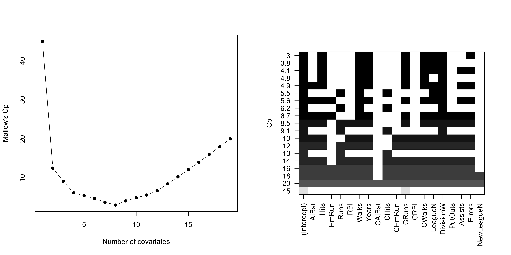
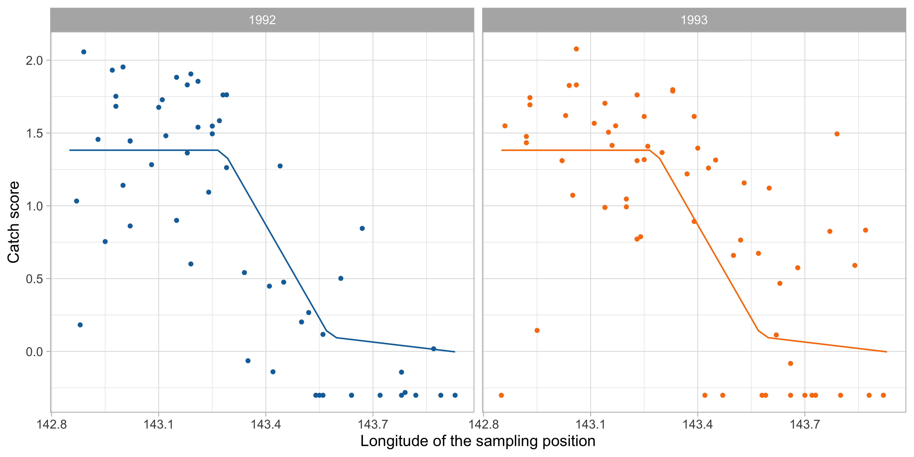

Rows: 263
Columns: 20
$ AtBat <int> 315, 479, 496, 321, 594, 185, 298, 323, 401, 574, 202, 418, …
$ Hits <int> 81, 130, 141, 87, 169, 37, 73, 81, 92, 159, 53, 113, 60, 43,…
$ HmRun <int> 7, 18, 20, 10, 4, 1, 0, 6, 17, 21, 4, 13, 0, 7, 20, 2, 8, 16…
$ Runs <int> 24, 66, 65, 39, 74, 23, 24, 26, 49, 107, 31, 48, 30, 29, 89,…
$ RBI <int> 38, 72, 78, 42, 51, 8, 24, 32, 66, 75, 26, 61, 11, 27, 75, 8…
$ Walks <int> 39, 76, 37, 30, 35, 21, 7, 8, 65, 59, 27, 47, 22, 30, 73, 15…
$ Years <int> 14, 3, 11, 2, 11, 2, 3, 2, 13, 10, 9, 4, 6, 13, 15, 5, 8, 1,…
$ CAtBat <int> 3449, 1624, 5628, 396, 4408, 214, 509, 341, 5206, 4631, 1876…
$ CHits <int> 835, 457, 1575, 101, 1133, 42, 108, 86, 1332, 1300, 467, 392…
$ CHmRun <int> 69, 63, 225, 12, 19, 1, 0, 6, 253, 90, 15, 41, 4, 36, 177, 5…
$ CRuns <int> 321, 224, 828, 48, 501, 30, 41, 32, 784, 702, 192, 205, 309,…
$ CRBI <int> 414, 266, 838, 46, 336, 9, 37, 34, 890, 504, 186, 204, 103, …
$ CWalks <int> 375, 263, 354, 33, 194, 24, 12, 8, 866, 488, 161, 203, 207, …
$ League <fct> N, A, N, N, A, N, A, N, A, A, N, N, A, N, N, A, N, N, A, N, …
$ Division <fct> W, W, E, E, W, E, W, W, E, E, W, E, E, E, W, W, W, E, W, W, …
$ PutOuts <int> 632, 880, 200, 805, 282, 76, 121, 143, 0, 238, 304, 211, 121…
$ Assists <int> 43, 82, 11, 40, 421, 127, 283, 290, 0, 445, 45, 11, 151, 45,…
$ Errors <int> 10, 14, 3, 4, 25, 7, 9, 19, 0, 22, 11, 7, 6, 8, 10, 16, 2, 5…
$ Salary <dbl> 475.000, 480.000, 500.000, 91.500, 750.000, 70.000, 100.000,…
$ NewLeague <fct> N, A, N, N, A, A, A, N, A, A, N, N, A, N, N, A, N, N, N, N, …Additive models
Data Mining - CdL CLAMSES
Homepage
“I never keep a scorecard or the batting averages. I hate statistics. What I got to know, I keep in my head.”
Dizzy Dean, baseball player in the ’30s and ’40s.
In this unit we will cover the following topics:
- Generalized additive models (GAMs)
- Multivariate Adaptive Regression Splines (MARS)
In the previous unit,
The running example is about baseball data… but a lot has changed since the ’30s!
The Hitters dataset
We consider the
Hittersdataset, which contains information about n = 263 Major League Baseball players from the 1986 and 1987 seasons.We want to predict the Salary of 1987 of each player, as a function of several covariates:
- number of hits/runs/walks/assists/errors in 1986 and during the whole career;
- number of years in the major leagues;
- The league/division of the player at the end of 1986;
- …and many others.
The original dataset is available in the
ISLRR package.There are in total p = 19 variables that can be used to predict the salary of each player.
We considered the logarithmic transform of the salary (
logSalary). The predictions are then transformed back into the original scale.
A glimpse of the Hitters dataset
Preliminary operations
Correlation matrix of Hitters

A linear model
Best subset selection

The selected linear model
| term | estimate | std.error | statistic | p.value |
|---|---|---|---|---|
(Intercept) |
4.493 | 0.177 | 25.344 | 0.000 |
Hits |
0.004 | 0.002 | 2.255 | 0.025 |
Walks |
0.011 | 0.003 | 3.255 | 0.001 |
Years |
0.046 | 0.022 | 2.112 | 0.036 |
CRuns |
0.002 | 0.001 | 3.562 | 0.000 |
CWalks |
-0.001 | 0.001 | -2.204 | 0.029 |
League_N |
0.173 | 0.088 | 1.959 | 0.052 |
Division_W |
-0.189 | 0.087 | -2.165 | 0.032 |
Errors |
-0.012 | 0.007 | -1.689 | 0.093 |
Scatterplot with loess estimate

Generalized additive models (GAM)
The ANOVA decomposition of a function
Generalized additive models (GAM)
The backfitting algorithm I
The backfitting algorithm II
Local scoring for additive logistic regression
GAM using penalized splines
GAM using penalized splines
Additive models
Loading required package: nlmeThis is mgcv 1.9-0. For overview type 'help("mgcv-package")'.
Family: gaussian
Link function: identity
Formula:
logSalary ~ s(AtBat) + s(Hits) + s(HmRun) + s(Runs) + s(RBI) +
s(Walks) + s(Years) + s(CAtBat) + s(CHits) + s(CHmRun) +
s(CRuns) + s(CRBI) + s(CWalks) + League + Division + s(PutOuts) +
s(Assists) + s(Errors) + NewLeague
Parametric coefficients:
Estimate Std. Error t value Pr(>|t|)
(Intercept) 5.87718 0.04029 145.870 <2e-16 ***
LeagueN 0.06292 0.10121 0.622 0.535
DivisionW -0.03305 0.05094 -0.649 0.518
NewLeagueN 0.04495 0.09998 0.450 0.654
---
Signif. codes: 0 '***' 0.001 '**' 0.01 '*' 0.05 '.' 0.1 ' ' 1
Approximate significance of smooth terms:
edf Ref.df F p-value
s(AtBat) 5.206 6.337 3.016 0.00706 **
s(Hits) 8.227 8.681 6.439 3.13e-06 ***
s(HmRun) 5.171 6.236 2.497 0.02448 *
s(Runs) 3.077 3.908 1.743 0.14014
s(RBI) 3.679 4.619 4.599 0.00116 **
s(Walks) 5.989 7.059 3.024 0.00650 **
s(Years) 7.354 8.180 10.400 < 2e-16 ***
s(CAtBat) 1.000 1.000 0.814 0.36863
s(CHits) 1.000 1.000 5.111 0.02550 *
s(CHmRun) 5.773 6.805 5.492 1.73e-05 ***
s(CRuns) 1.000 1.000 0.459 0.49926
s(CRBI) 8.045 8.665 8.359 < 2e-16 ***
s(CWalks) 1.000 1.000 4.070 0.04578 *
s(PutOuts) 6.383 7.453 2.173 0.03875 *
s(Assists) 1.000 1.000 1.813 0.18056
s(Errors) 4.080 5.002 1.778 0.12214
---
Signif. codes: 0 '***' 0.001 '**' 0.01 '*' 0.05 '.' 0.1 ' ' 1
R-sq.(adj) = 0.906 Deviance explained = 94%
GCV = 0.1233 Scale est. = 0.078246 n = 197Variable selection
Family: gaussian
Link function: identity
Formula:
logSalary ~ s(AtBat) + s(Hits) + s(HmRun) + s(Runs) + s(RBI) +
s(Walks) + s(Years) + s(CAtBat) + s(CHits) + s(CHmRun) +
s(CRuns) + s(CRBI) + s(CWalks) + League + Division + s(PutOuts) +
s(Assists) + s(Errors) + NewLeague
Parametric coefficients:
Estimate Std. Error t value Pr(>|t|)
(Intercept) 5.87718 0.04029 145.870 <2e-16 ***
LeagueN 0.06292 0.10121 0.622 0.535
DivisionW -0.03305 0.05094 -0.649 0.518
NewLeagueN 0.04495 0.09998 0.450 0.654
---
Signif. codes: 0 '***' 0.001 '**' 0.01 '*' 0.05 '.' 0.1 ' ' 1
Approximate significance of smooth terms:
edf Ref.df F p-value
s(AtBat) 5.206 6.337 3.016 0.00706 **
s(Hits) 8.227 8.681 6.439 3.13e-06 ***
s(HmRun) 5.171 6.236 2.497 0.02448 *
s(Runs) 3.077 3.908 1.743 0.14014
s(RBI) 3.679 4.619 4.599 0.00116 **
s(Walks) 5.989 7.059 3.024 0.00650 **
s(Years) 7.354 8.180 10.400 < 2e-16 ***
s(CAtBat) 1.000 1.000 0.814 0.36863
s(CHits) 1.000 1.000 5.111 0.02550 *
s(CHmRun) 5.773 6.805 5.492 1.73e-05 ***
s(CRuns) 1.000 1.000 0.459 0.49926
s(CRBI) 8.045 8.665 8.359 < 2e-16 ***
s(CWalks) 1.000 1.000 4.070 0.04578 *
s(PutOuts) 6.383 7.453 2.173 0.03875 *
s(Assists) 1.000 1.000 1.813 0.18056
s(Errors) 4.080 5.002 1.778 0.12214
---
Signif. codes: 0 '***' 0.001 '**' 0.01 '*' 0.05 '.' 0.1 ' ' 1
R-sq.(adj) = 0.906 Deviance explained = 94%
GCV = 0.1233 Scale est. = 0.078246 n = 197Partial effect (Years)


Pros and cons of generalized additive models (GAMs)
MARS
MARS
Loading required package: FormulaLoading required package: plotmoLoading required package: plotrixLoading required package: TeachingDemosCall: earth(formula=logSalary~., data=Hitters_train, degree=1)
logSalary =
8.020721
+ 0.06248825 * pmax(0, 43 - Hits)
+ 0.6740774 * pmax(0, 1 - HmRun)
+ 0.02292479 * pmax(0, Walks - 61)
- 0.06663346 * pmax(0, 7 - Years)
- 0.1228443 * pmax(0, Years - 7)
- 0.08609092 * pmax(0, 6 - CHmRun)
- 0.005131412 * pmax(0, 245 - CRuns)
- 0.00205555 * pmax(0, 1032 - CRBI)
- 0.001340798 * pmax(0, CWalks - 619)
Selected 10 of 31 terms, and 8 of 19 predictors
Termination condition: Reached nk 39
Importance: CRuns, CRBI, Years, Hits, Walks, CWalks, HmRun, CHmRun, ...
Number of terms at each degree of interaction: 1 9 (additive model)
GCV 0.1712071 RSS 27.53567 GRSq 0.7961872 RSq 0.8319032
Call: earth(formula=logSalary~., data=Hitters_train, degree=2)
logSalary =
6.585324
- 0.06200705 * pmax(0, 7 - Years)
- 0.09990625 * pmax(0, Years - 7)
- 0.002750561 * pmax(0, 471 - CHits)
+ 0.0009875533 * pmax(0, CHits - 471)
+ 0.09359974 * pmax(0, CHmRun - 259)
- 0.000472187 * pmax(0, 942 - PutOuts)
+ 6.069929e-06 * AtBat * pmax(0, PutOuts - 942)
- 8.932618e-05 * pmax(0, CHmRun - 259) * CRuns
- 0.0004101945 * pmax(0, PutOuts - 942) * Errors
+ 0.002969056 * pmax(0, 217 - AtBat) * pmax(0, 7 - Years)
- 2.334583e-06 * pmax(0, 424 - AtBat) * pmax(0, CHits - 471)
+ 0.006861765 * pmax(0, 20 - Walks) * pmax(0, 7 - Years)
+ 7.799038e-05 * pmax(0, Walks - 60) * pmax(0, 259 - CHmRun)
+ 6.921979e-06 * pmax(0, 3015 - CAtBat) * pmax(0, CRuns - 245)
- 3.052659e-07 * pmax(0, CAtBat - 3015) * pmax(0, CRuns - 245)
- 3.839283e-05 * pmax(0, CHits - 471) * pmax(0, 300 - CRBI)
+ 6.56986e-06 * pmax(0, CHmRun - 32) * pmax(0, CRuns - 245)
- 3.852772e-05 * pmax(0, 245 - CRuns) * pmax(0, 112 - CRBI)
Selected 19 of 32 terms, and 10 of 19 predictors
Termination condition: RSq changed by less than 0.001 at 32 terms
Importance: Years, CRuns, AtBat, CHits, CRBI, Walks, CHmRun, CAtBat, ...
Number of terms at each degree of interaction: 1 6 12
GCV 0.1621953 RSS 18.77267 GRSq 0.8069152 RSq 0.8853987
plotmo grid: AtBat Hits HmRun Runs RBI Walks Years CAtBat CHits CHmRun
407 103 9 50 46 39 6 1924 491 40
CRuns CRBI CWalks League Division PutOuts Assists Errors NewLeague
247 208 175 A W 224 45 7 A
Comments and cricism to linear models